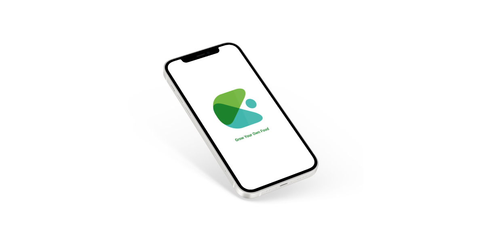
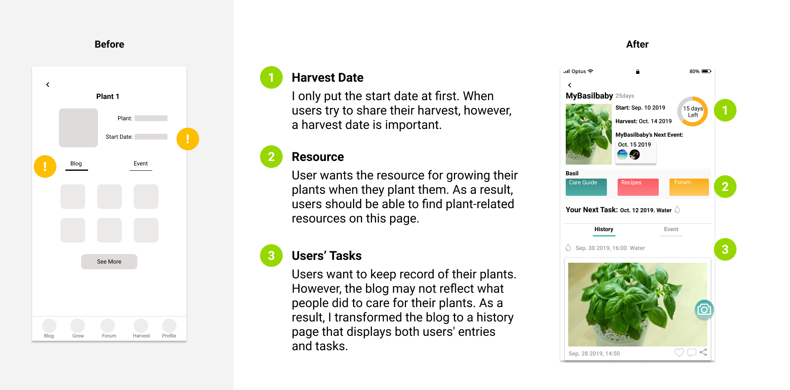

Gardenio
Design an app that helps users grow their plant sustainably
Overview
Gardenio is a plant-selling startup that aims to encourage people to grow their own food in a sustainable manner. I attempted to design a product for them that would improve the user experience while also meeting their business needs.
Conducting research, designing an app, and making interaction designs were among my responsibilities.
Duration
Sep. 2019- Nov. 2019
Supervisor
Eric Nordquist
My Role
Product Designer
Tools
Figma
Whiteboard
Methods
Competitive Analysis
Business Model Canvas
User Interviews
Design Sprint Mapping
Information Architecture
Wireframes
Prototyping
User Testing
Problem Statement
Gardenio discovered that when faced with difficulties in planting, gardeners are prone to giving up. As a result, Gardenio would like to know how to encourage clients to continue gardening and engage more with the company.
Research
Competitive AnalysisI conducted competitive analysis to identify Gardenio's unique value proposition and how it differs from competitors' products, which can help guide the future direction of our design. Gardenio only sells edible plants, while other gardening apps emphasize the number of plant varieties or the beauty of their plants.
Research
User Interviews and Key FindingsI interviewed 5 people with previous gardening experience to learn about their planting experiences.
Among the important findings are
- What to plant?
Interviewees don't know how to choose plants when they're not sure which plants they'll like. - How to plant?
They would like to know how to plant if they have never done it before. Also, if they are unsure how to care for plants that they have never grown before, they want to seek assistance. They hope to have other experienced people assist them when they run into problems. - Which advice is useful?
Individuals do not know which advice will be useful and should be taken while seeking assistance online. - WOW!
Gardeners amaze their friends when they share their harvest with them.
Design Sprint Map
After user interviews and competitive analysis, I started to do Design sprint Maps that help me see a product or service and how users interact with it. Although this is an individual project, I believe that diverse perspectives are valuable, thus multiple students cooperated on a Spring Map. Besides users’ goals, we consider Gardenio's long-term goals, map user journeys, and discover an area where Gardenio wants to focus.
Then we use How Might We as a way to find Gardenio’s opportunities.
- How Might We let users share the plants they've grown with their friends?
Why this HMW?
It can help Gardenio attract new customers because Gardenio may be discovered by users sharing. - How Might We encourage users to post more useful posts or answers in the community?
Why this HMW?
It can assist Gardenio in retaining current customers since if the information provided by the community is useful, more people will want to stay. - How Might We Support Users to look after their plants?
Why this HMW?
It can help Gardenio sell plants since if their users aren't frustrated during planting, they are more likely to try again.
Design Goal
The primary goal of this project is to assist gardeners in continuing to grow their plants while also allowing the community to share useful information.
Design Strategy

Concept 1: Create Events that can connect gardeners by sharing harvest.
Users can schedule a date for inviting friends to come over and share food once they've started growing the plants. Everyone in the events can see how the hosts look after the plants and give feedback.
Rationale
- Gardenio can attract new customers
- Instead of giving up when facing difficulties, users might persevere on cultivating the plant.
- Guests who are experienced in gardening can support host in planting
- Guests who are newbies can learn from hosts’ experience.
Concept 2: Encourage experienced gardeners to share useful information with the community.
Users who ask questions in Q&A can choose the best answers and mark their questions as solved. Users that offer the best answer will be rewarded with a badge.
Rationale
- Best answers can help Individuals to know which advice will be useful and should be taken.
- Badges can encourage experienced experts to answer questions.
- When more experts want to devote their guidance, it can help the knowledge from Gardenio's community be valuable.
Wireframe
Prototype Testing and Iteration
Create events pagesBased on the tester's feedback, I created a new version for create events page. Changes I made:
Prototype Testing and Iteration
Look after plants pageBased on the tester's feedback, I created a new version for Look after plants page. Changes I made:

Hi-fi
Reflections
My client likes the idea of bringing people together through food, therefore they'll focus more on food-related activities.
From this project, I learned how to think about users while still achieving business goals. Shifting the perspective between businesses and users was a lot of fun for me.
Companies can obtain mutual benefits by using different viewpoints.
Things could be better; certain user pages are excessively text-heavy; there should be a better method to convey the information.